Portfolio 2026UI/UX Design
Bobby
Keerthan
UI/UX & Graphic Designer
Apps, websites and brands, from someone who has founded two brands.
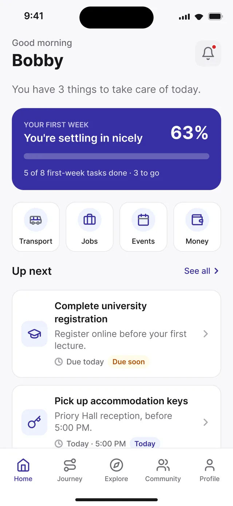
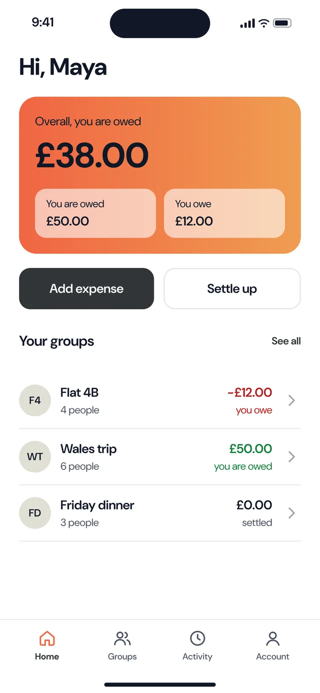
UI/UX design · Web design
Brand identity · Poster design
Coventry, United Kingdom · bobbykeerthan7 [at] gmail [dot] com · linkedin.com/in/bobbykeerthan-design
Contents
A short edit of selected work — interface and web design.
- 01 IntroductionWho I am and how I work 03
- 02 EducationMA Graphic Design, Coventry University 04
- 03 Skills & SoftwareTools, capabilities and craft 04
- 04 UI/UX DesignARRIVE · CashSplit · Auspify dashboard · HUMANE · Peter Eugene Ball 05
- 05 Web DesignThe Culture Club · Sound by Sunny 14
- 06 ContactEmail, phone, LinkedIn and location 17
02
01
Introduction
I like making new things.
In a shop, most people pick the drink they already know. I pick the one I've never tried. Design feels like a game where I earn XP every time I try something new, and when a project comes together and looks right, that buzz is what keeps me creating.
Based in Coventry, United Kingdom
Experience
Sep 2026 – Oct 2026
UI/UX Design Intern
Auspify Technologies · Remote
A task-based internship. I designed CashSplit, a cost-splitting app for students, from wireframes to a full prototype, plus a landing page and an online store dashboard.
May 2026 – Sep 2026
Digital Designer (Volunteer)
The Culture Club · Coventry, UK
I joined to edit and colour-grade their videos, stepped in as videographer when theirs left, then pitched and built their website.
2022 – Nov 2025
Founder & Designer
Silvercrow Clothing · Chennai, India
Working for my dad's brand felt like riding someone else's horse, so I started my own. I predicted the anime tee trend, set up the printing, designed every tee and collaborated with local film teams.
2021 – 2023
Founder & Brand Manager
Silvertrulla · Chennai, India
Started with my dad after COVID, using his knowledge as a herbal acupuncturist to make pickles from exotic plants. I designed the product labels for wholesale and our retail bottles on Amazon.
Jul 2016 – Feb 2021
Business & Retail Manager, Social Media & Technical Support
Prince Herbals · Chennai, India
I joined a tiny shop with one employee. With just an iPhone and an old PC, I planned, shot and edited YouTube videos, growing the channel from 0 to 5,000 subscribers. I opened an online store, ran ad campaigns and set up wholesale deals with other herbal brands. When I left, it had grown into a medium-sized business.
03
02
Education
2025 – 2026
MA Graphic Design
Coventry University, United Kingdom
2018
C-Tech Higher Certificate in VFX
Image Creative Education · NSDC Partnered
2016
B.E. Electronics & Communication Engineering
Saveetha School of Engineering, Chennai
Focus
Interface and web design first, backed by brand identity, print, video and colour grading.
03
Skills & Software
The tools and skills I use, from research and wireframes to brand, motion and print.
UI/UX
Video
Print & Production
Web & Digital
Design & Brand
User research · Interface research · Wireframing · Prototyping · Case studies · Motion & animation
Video editing · Colour grading · Social & promotional content
DTF printing · Sublimation printing · Artwork prep for production · Garment finishing
Website design · WordPress · Social-media branding · Amazon storefront design
Brand identity · Logo design · Packaging · Typography · Layout · Editorial & print · Digital design
Software
Design & Layout
Adobe Photoshop
Adobe Illustrator
Adobe InDesign
Figma
Video & Colour
Adobe After Effects
Adobe Premiere Pro
DaVinci Resolve
Adobe Lightroom
3D & AI tools
Blender
Unreal Engine
Claude
AI-assisted web builds
04
04
UI/UX Design
Project 01 · UI/UX case study
ARRIVE
Your student life, in one place.
The project
So I thought, why not make one app for everyone in my situation? Part-time jobs, nearby events, sorting your money, transport, the local community, and everything you need to do in your first week, all in one place.
Who it’s for
Mainly international students, but it helps anyone coming to the UK for the first time.
The problem
When I moved to the UK, there was so much to sort out that nobody tells you about: registering with the NHS, finishing uni registration, finding the bus stop, getting a bus pass. I didn't know where to start.
The approach
It took me three to four months to register with the NHS, and I didn't know how important an NI number was until I needed one for a part-time job. Friends who'd been through it taught me. So I split the essentials into stages, first week, second week and onwards, as a simple walkthrough, so nobody ends up with a big headache later.
Role
UX · UI · Visual
Platform
iOS · iPhone 16
Scope
26 screens
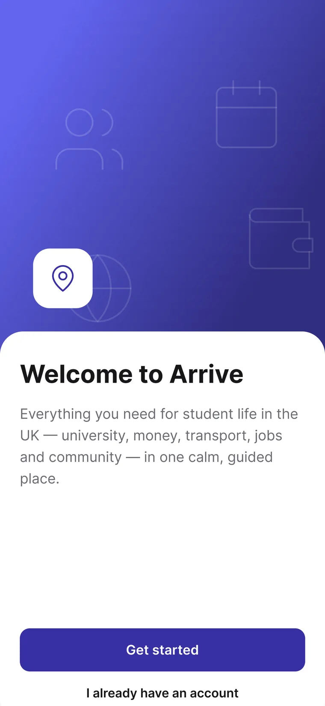
Welcome
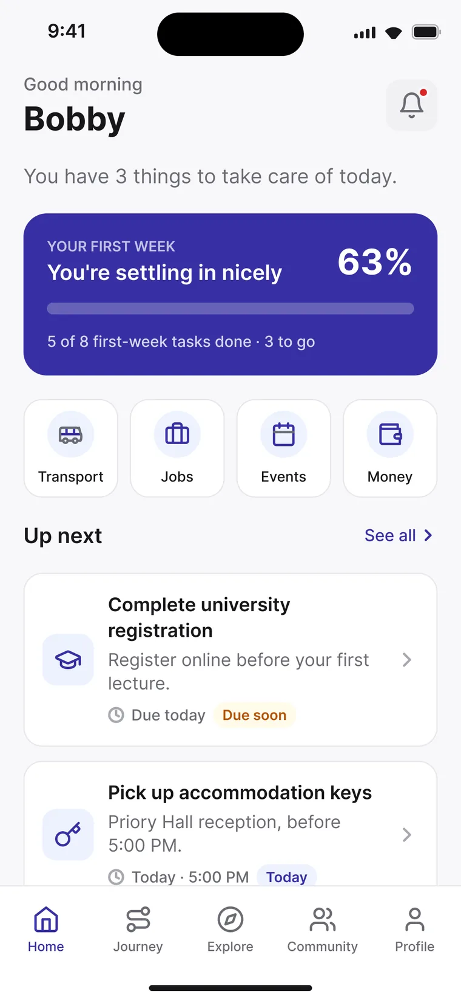
Home — the settling-in progress card
05
From flows to wireframes.
Before any colour, I mapped how a new student moves through the app, then drew each screen in grey.
User flows
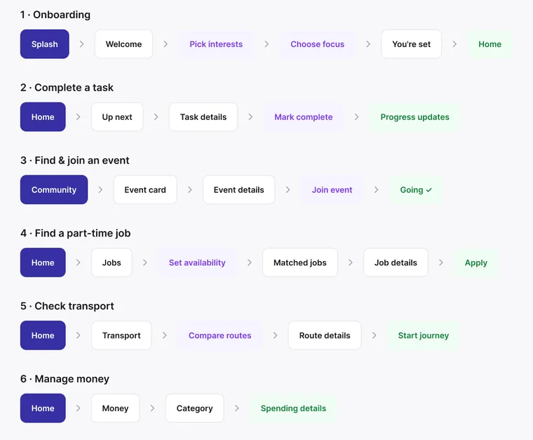
Wireframes
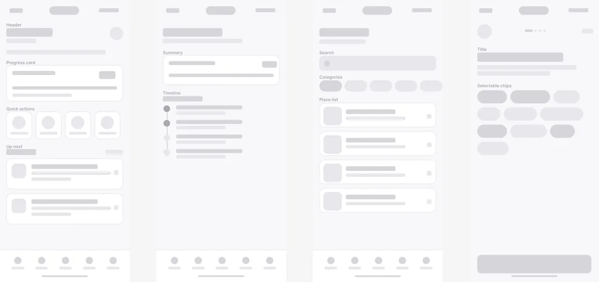
What I focused on
I mapped six paths: getting started, finishing a task, joining an event, finding a part-time job, checking transport and sorting money. The first-week to-do list sits on the Home screen, so the most important thing is always the first thing you see. The wireframes are grey on purpose. I wanted the structure right first: the progress card, the Up next list, the Journey timeline and the interest chips. Colour came after.
06
26 screens, one shared system.
26 screens, all built from one design system so everything feels like the same app.
Outcome
The part I’m proudest of is the first-week to-do list. When I arrived, nobody told me what to do first. ARRIVE does: NHS, uni registration, bus pass, step by step. Then it carries on with money, transport, jobs, events and meeting people.
Colour
Indigo 3730A3
Ink 17171A
Slate 6B6B73
Surface F1F1F4
Success 15803D
Warning B45309
Typeface
Aa
Inter Bold · Semi Bold · Medium · Regular
System
393 × 852 · iPhone 16 canvas Built from live components & shared tokens
Journey — guided timeline
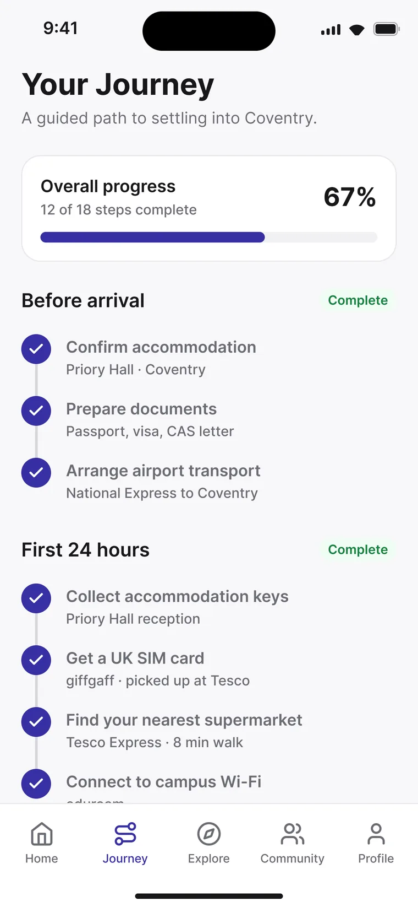
Money
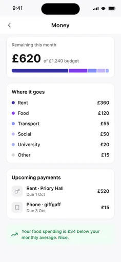
Events
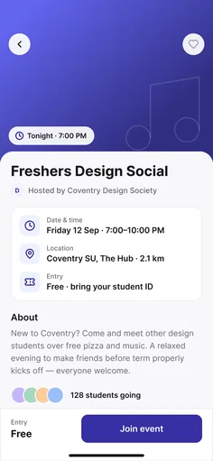
Transport
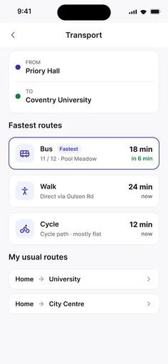
Jobs
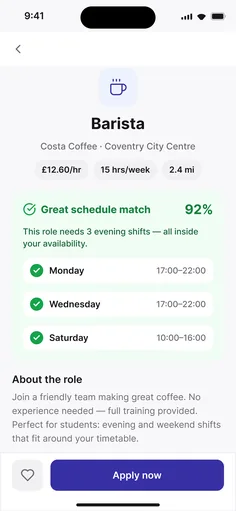
07
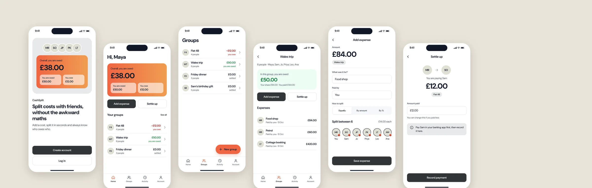
CashSplit
As students, most of us aren’t working full time, and some of us aren’t working at all. We don’t mind covering a friend now and then, but money is tight, so we split everything. Auspify asked for an app, the idea was mine: make splitting costs easy.
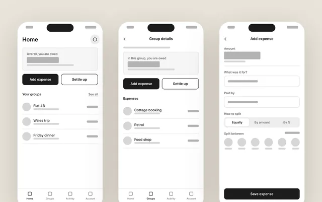
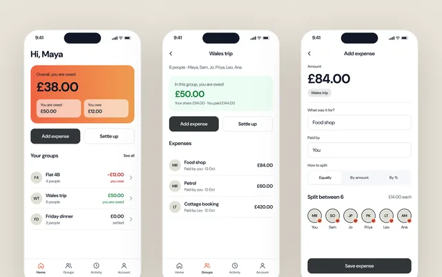
01 The idea
I looked at apps like Splitwise and wanted something simpler. You add an expense and choose how to split it on one screen, equally, by amount or by percentage.
02 Process
Wireframes first, in greyscale
Then a full prototype, 11 screens
Designed for iPhone 17 (402 × 874)
03 What makes it simple
- One-screen split
- → equal, amount or percentage
- Red and green balances
- → owe or owed, at a glance
- One-tap settle up
- → confirms straight away
- Clean, no fuss
- → no ads, no clutter
- Groups & activity
- → see who paid what
Palette
- Orange
F06543 - Ink
111827 - Owed
15803D - Owe
B91C1C
Auspify UI/UX Internship · October 2026
08
More from Auspify.
Two more tasks from my Auspify internship: a dashboard for a small online shop, and a landing page for a student planner.
Accessibility
I checked the dashboard against WCAG AA and fixed what fell short. Every status has an icon and a word, not just a colour, and white text never sits on amber.
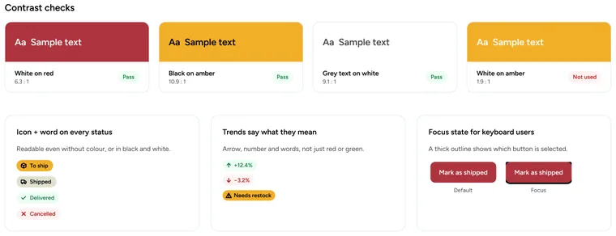
Studyflow — landing page
A landing page that helps students plan their week in five minutes, for desktop and mobile, built on one green colour system.
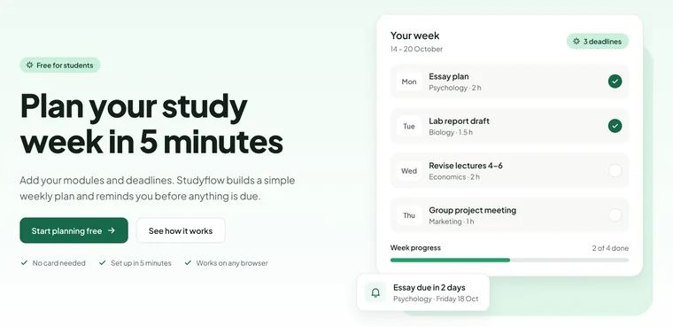
Shopdesk — store dashboard
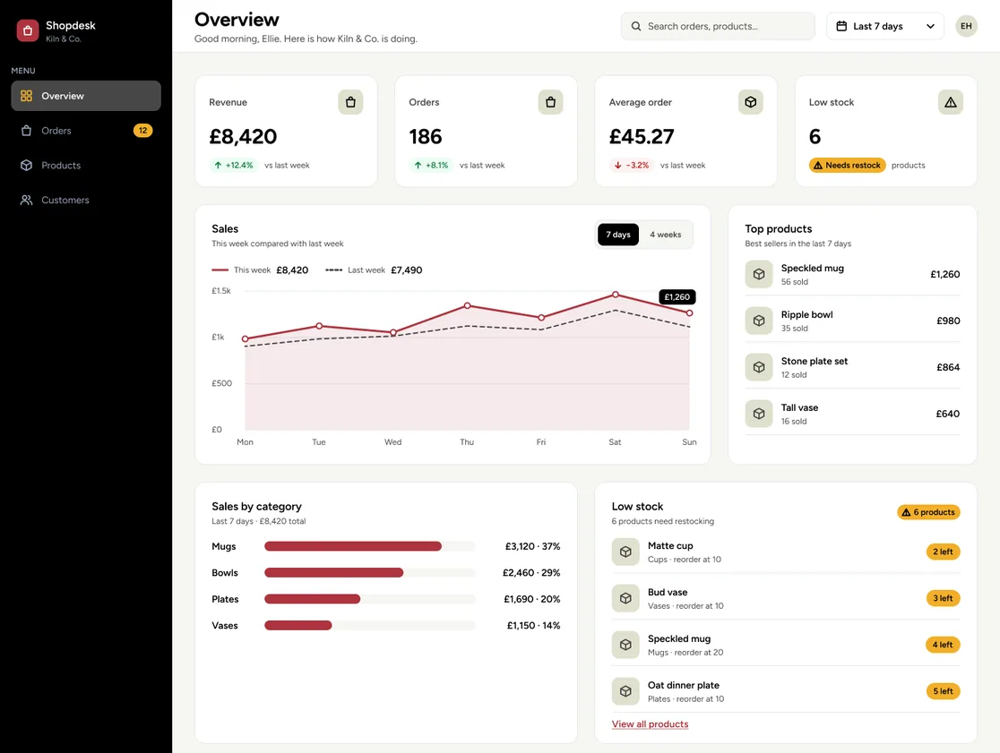
A dashboard for a small pottery shop: sales, orders, top products and low stock on one screen, plus pages for orders, products and customers. I built a component set first, then made it clickable.
09
Project 02 · UI/UX, product design
HUMANE
ABC field-management app
Capture → Assign → Treat → Release
The project
A collaboration with a product designer friend. Together we designed HUMANE, an animal birth control product for street dogs in India, and I designed the app that runs it.
The challenge
India has huge numbers of street dogs. The dogs are great, don't get me wrong, but rabies is very hard to cure. Imagine a child playing in a field getting bitten. It can affect their health for the rest of their life.
Approach
For me it's people first, but there's a better way than culling. Dog numbers grow because there's no birth control. So we focused on doing it without harming the dogs, and showing the results to the people who care about them. Each dog gets a QR tag, and the app tracks it from capture through the PODs to release.
Platform
Mobile · iOS
Domain
Animal welfare
Flow
Capture → Release
Screens
15 designed
02 Capture dog
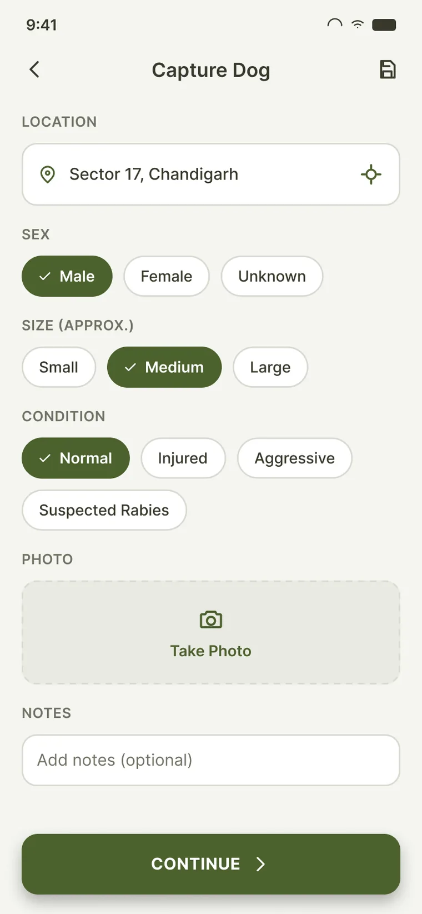
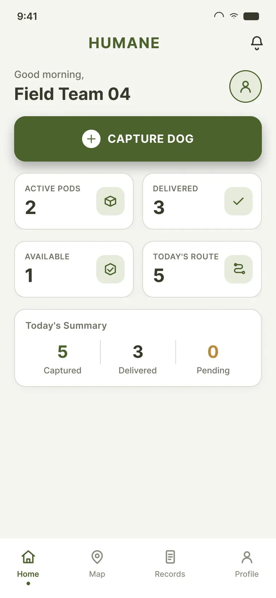
01 Home dashboard
10
Traceable, end to end.
Every dog gets one record, from capture to release, so none get lost, hurt or caught twice. Catching the same dog twice just wastes money. It also shows animal lovers the dogs are treated well, so the app works for both sides.
Colour
Field Green
#4B612D
Ink
#232420
Sage Tint
#E5EBDA
Bone
#EFF0EA
Paper
#FFFFFF
Typeface
Aa
Inter Medium · Semi Bold · Bold Display / label / body
Components
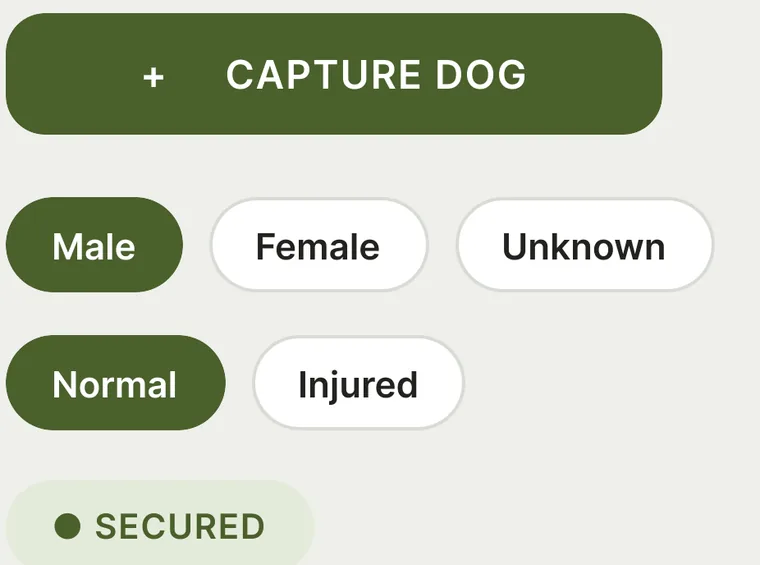
09 Lifecycle timeline
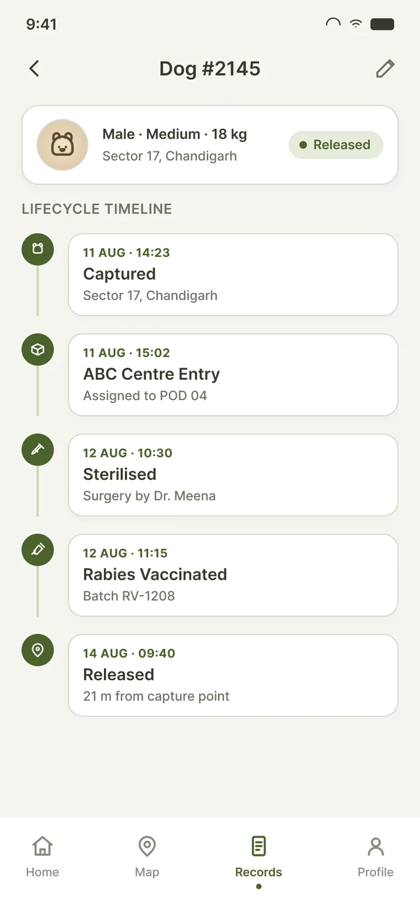
14 Release confirmed
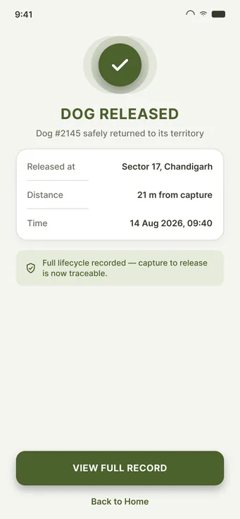
10 ABC map overview
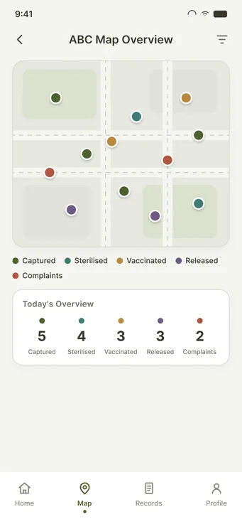
11
Peter Eugene Ball
A gallery companion for a sculpture & painting exhibition
Project 03 · MA Graphic Design, Coventry University · Mobile app · 2026
On a uni trip we saw Peter Eugene Ball's work. I loved how he takes driftwood washed up from the ocean and melds it with metal and gold into unique, antique-feeling figures that sit so well in museums and churches.
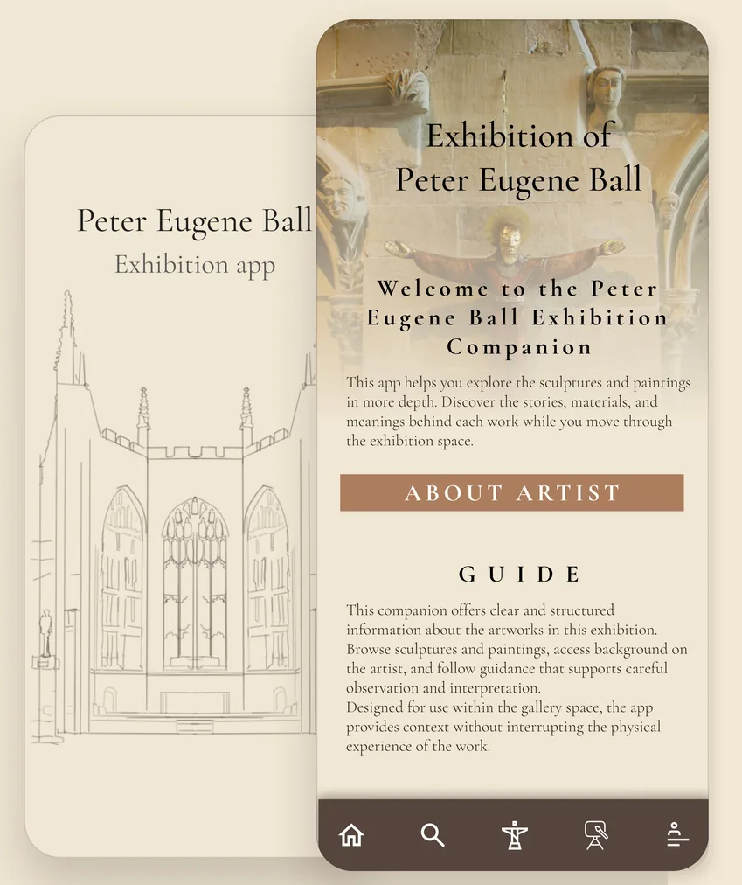
01 Splash
02 Exhibition home
The challenge
People need to understand this work more than just looking at it, but the app shouldn't take attention away from the sculptures.
Who it’s for
Visitors moving through the gallery during the Peter Eugene Ball exhibition, reading at their own pace beside the work itself.
The approach
Keep it direct: open the app, tap the piece, and everything's there, just a few steps away. Each sculpture also has its own QR code that takes you straight to its page.
12
The reading structure
Every artwork has the same three tabs, so once you know how to read one piece, you know them all.
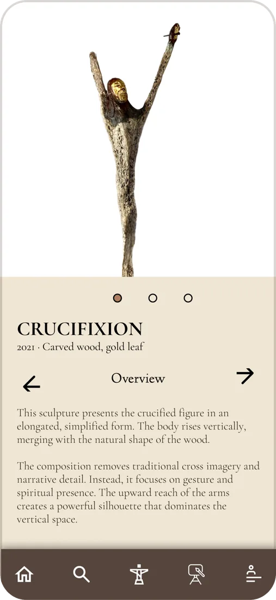
01 Overview
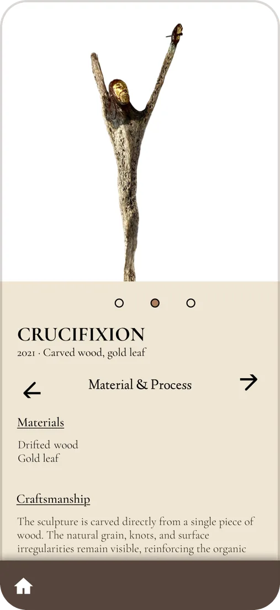
02 Material & process
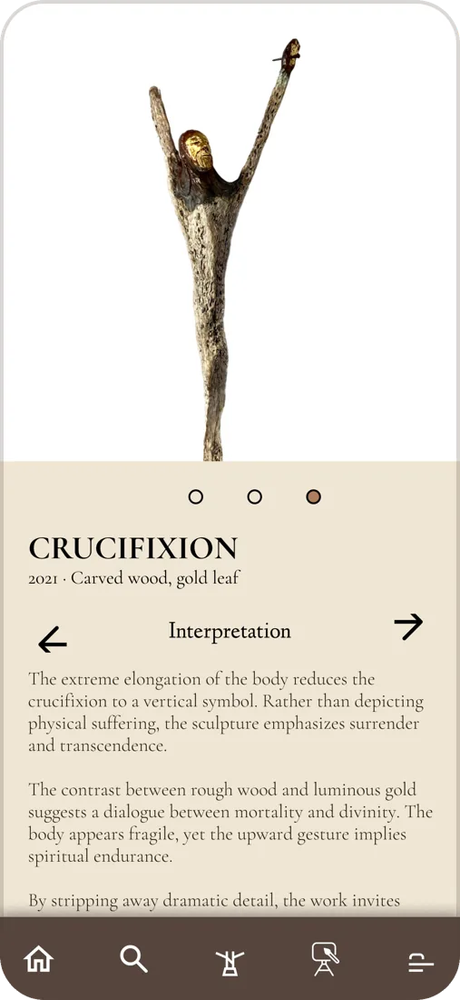
03 Interpretation
User flow
Splash → Home → Browse → Artwork → Overview · Material · Interpretation
Design language
Paper #F1E7D4
Espresso #56453C
Bronze #AC7F5E
Ink #271E17
Aa
Cormorant Garamond
A classic serif, easy to read, nothing fancy. Bronze from the sculptures, dirty white from the church, for an old, antique feel.
The outcome
Quick to read, then look back up.
The sculptures are the main part, not the screen. The app gets you to the point as quickly as possible, then lets you look back up.
13
05
Web Design
I design every site myself, then use AI to help build it.
I start by writing down what the client wants and listing every requirement, then I look for inspiration. I design in Figma, Illustrator or Photoshop, whichever suits the project. Then I explain to the AI exactly how each element should look and react, down to the hover states.
The workflow
01
Research
02
Visual design
03
AI-assisted development
04
Functional website
The Culture Club — home page
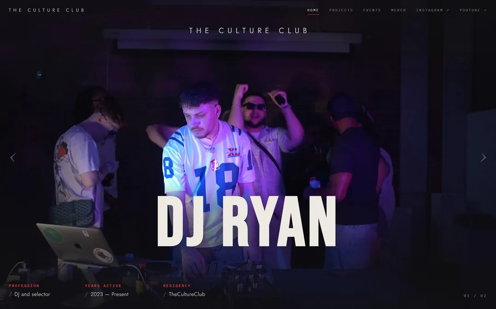
The Culture Club
DJ & events collective, Coventry — home page, resident feature
Design — Illustrator · Figma · Photoshop
Featured project 01 of 02
14
The Culture Club
Project 01 · Dark editorial, club identity
A real client. I joined as their video editor and colour grader, stepped in as videographer when theirs left, then pitched them a website for events and merch.
Role
Web design · Visual design · AI-assisted development
Process
Research → Visual direction → Design → AI-assisted build
Tools
Adobe Illustrator · Figma · Photoshop · AI build
Colour
Ink #0B0A0D
Ink 2 #121016
Bone #F0ECE4
Signal #E8432E
Typography
Bebas Neue
Anton
Cormorant italic
IBM Plex Mono
Display · names
Headline
Serif accent
Meta · mono
System & motion
Past events hold private photo folders, so guests can download their photos using a code they get at the event, because privacy matters. Clicking Merch turns it into a whole different site, with new colours and type. Designed in Figma and Illustrator, built with help from Claude.
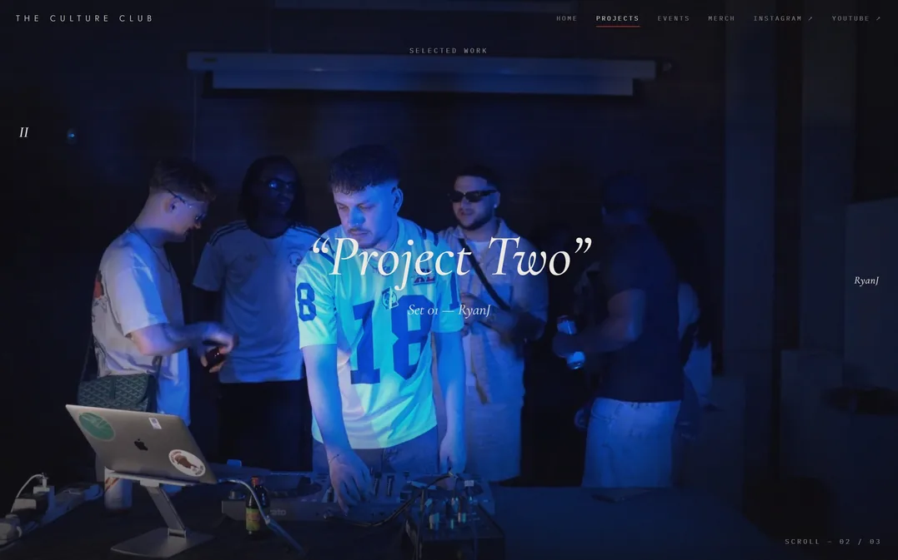
01 Projects — scroll-reactive video stage
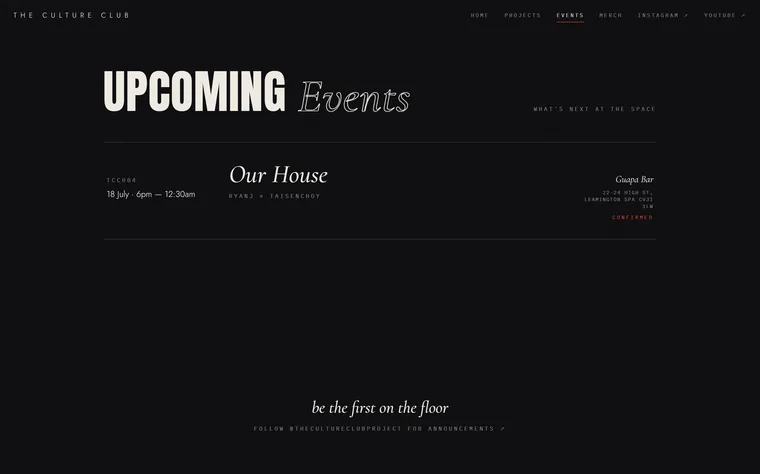
02 Events — editorial index
Built with React · Vite · Framer Motion
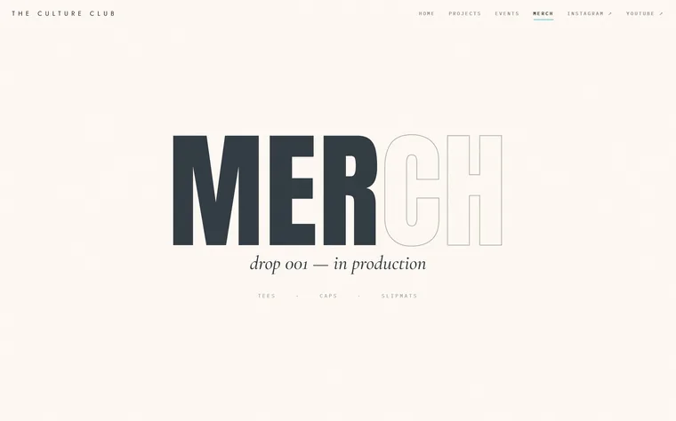
03 Merch — light-mode inversion
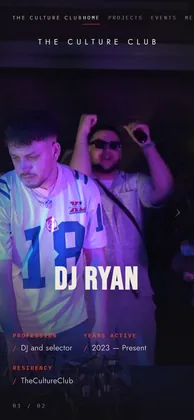
Mobile · 390pt
15
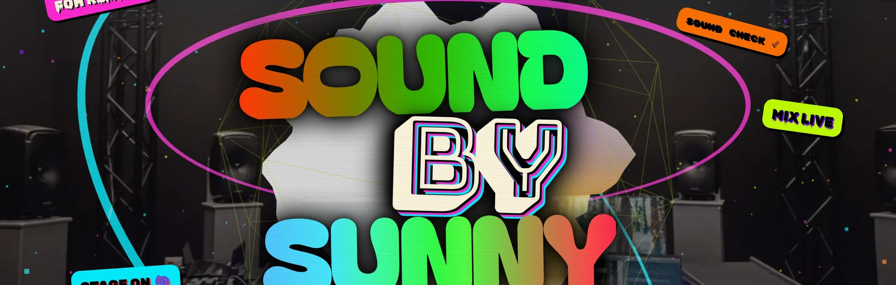
Sound by Sunny
Project 02 · Sound engineering, media
My friend Sunny is a sound engineer who wanted a website to show his projects and his personality, so he asked me to build it.
01 The brief
The brief: Sunny’s personality is loud and rave-driven, so the site had to be too. The idea started from the stage where a concert happens, with a vibey wave background and a neon palette. I used Figma and Claude to guide me through it.
03 Visual response
Orbital rings
→ turntable / vinyl motif
Neon palette
→ stage-lighting energy
Glitch marquees
→ signal & soundcheck
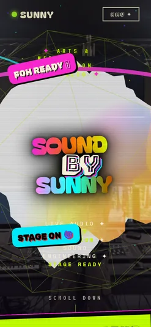
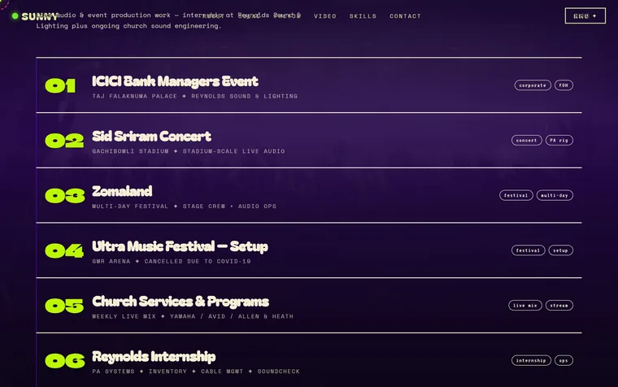
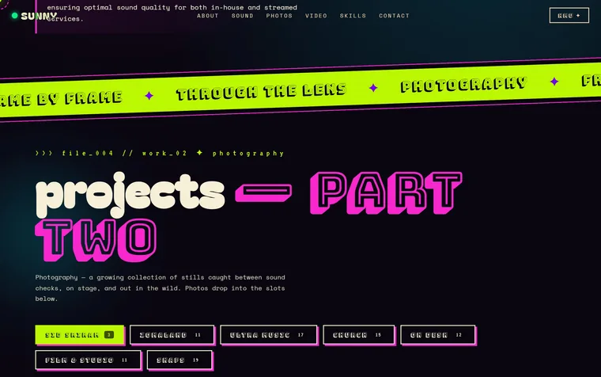
02 Research
Sound engineering & live audio Waveforms & frequency patterns Music / rave visual language Stage, FOH & backstage culture Experimental display typography Contemporary portfolio layouts Client-preferred neon colours
Bubble display type
→ rave-flyer culture
file_00x // mono
→ engineer’s desk language
Researched palette
Lime C7F047
Magenta FF2EC4
Cyan 33D9F2
Void 140A20
Mobile · 390pt — the neon system holds on small screens
Sound work — indexed list
Display type — rave marquee
Live at abrahamrichard99.github.io/sunnyy GitHub Pages · static build
16
06
Contact
Let’s work together.
I’m looking for a full-time UI/UX or design role. I love designing, I respect people who design, and I’d love to work with them and pick up their skills.
bobbykeerthan7 [at] gmail [dot] com
Location
Availability
Coventry, United Kingdom
Full-time UI/UX & design roles
linkedin.com/in/bobbykeerthan-design
Bobby Keerthan
UI/UX & Graphic Designer
Designed by Bobby Keerthan · 2026
17